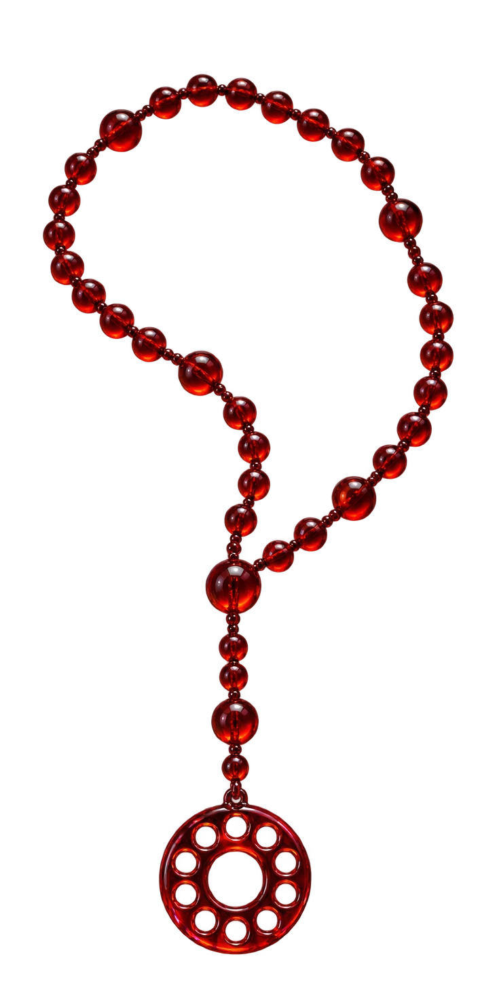
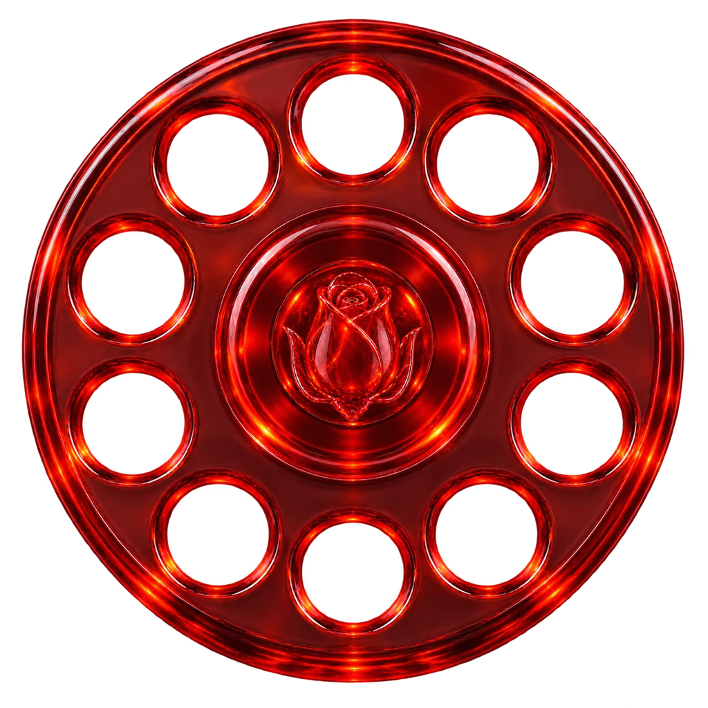

A dial with a rose in it.
Ten finger holes, one for each digit from 0 to 9, around a rose bud. A telephone and a rose in one flat shape, one color, legible at 16px. The mark sits beside a lowercase wordmark in Plain Light.
Plain, at weight 100.
Weight 100 for headlines from 42 to 147px, 300 for body, 400 for emphasis. Iosevka Fixed for anything a machine produced. Sizes below are scaled down on small screens.
Crimson canvas, one red accent.
The page sits on Inkline Crimson. Cards step down to Obsidian Burgundy, hairlines up to Dusk Maroon. Nava Fire fills the actions and the active tab. Nava Red is the mark, the icons and the live-row indicator.
Red glass, ROSARIO's own objects.
Three objects, all in translucent red glass on transparent backgrounds: the rosary the name comes from, the dial in the mark, and the handset ROSARIO answers.


The other candidates.
The marks considered on the way to the dial. The first is the identity. The rest stay on file.